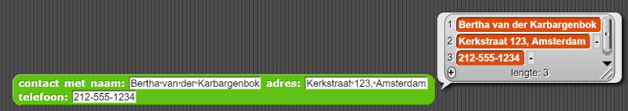
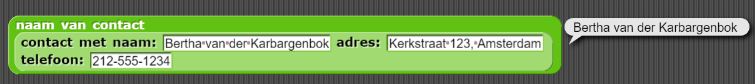
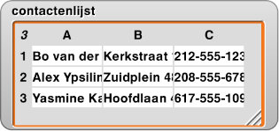

Het maken van abstracte datatypes
In deze les ga je een contactenlijst maken.
Op deze pagina, ga je een abstract datatype maken om contactgegevens zoals naam, adres, telefoonnummer, etc. op te slaan en later te kunnen bekijken.
Het opzetten van de contactenlijst.
-

- Maak een globale contactenlijst variabele.
- Initialiseer contactenlijst als een lege lijst.
Waarom globaal?
Het maken van het abstracte datatype
punt gemaakt
om de coördinaten van ieder punt in een lijst van punten op te slaan. Nu kunnen
we een abstract datatype contact maken om de data voor ieder contact in onze
contactenlijst in op te slaan."punt constructor gebruikt om een lijst van coördinaten te maken."
punt constructor:
coördinatenselector: en
en

contactconstructor nodig en selectors
om toegang te krijgen tot de naam, het adres en telefoonnummer van het contact.-
Shortcut: Je zou de volgende text in het "Maak een blok"-venster kunnen plakken om het blok sneller te maken.Maak een
De %-tekens zorgen ervoor dat de woorden variabelen worden.contact met naam: %naam adres: %adres telefoon: %telefooncontactconstructor die drie variabelen accepteert als invoer: de naam, het telefoonnummer en het adres van een contact.
De constructor zal een contact terugrapporteren (een lijst van de drie variabelen):

-
Schrijf de selectorblokken om de
naam van een contact,adres van een contact, oftelefoonnummer van een contactterug te kunnen vinden:

-
Bepaal de invoertypes voor iedere selector zodat het duidelijk is dat ze een lijst (een heel
contact) als invoer nodig hebben.
Je hebt geleerd hoe je Een invoertype moet specificeren in Hoofdstuk 2. -
Kijk of je blokken samen kunnen werken, debug de bugs die je vindt.
- Als eerste maak je een constructor (met invoerwaardes) in iedere selector (zoals hierboven) om te kijken of ze het goede stukje van een contact terugrapporteren.
-
Vervolgens gebruik je je
contactconstructor om een paar contactentoe te voegenaan je contactenlijst.Je kan de volgende voorbeelden gebruiken of je eigen contacten verzinnen.Naam Adres Telefoonnummer Bertha van der Kabarchenbok Kerkstraat 123, Amsterdam 212-555-1234 Alfred Ypsilinti Zuidplein 382, Assen 208-555-6789 Yasmine Katadreuffe Hoofdlaan 420, Maastricht 617-555-1098 - Zie hoe je contacten in je contactenlijst verschijnen.
-
Tabelweergave voor contactenlijst 'watcher':

-
Lijstweergave voor contactenlijst 'watcher':
 -
Probeer de
naam, hetadres, oftelefoonnummerte selecteren van een contact in jouw lijst.
- Debug de problemen die je tegenkomt.
Snap! heeft 2 verschillende manieren om lijsten in lijsten weer te geven. Je kan kiezen op welke manier je de lijst wil weergeven door met je rechter-muisknop op de contactenlijst 'watcher' op het speelveld.Als je de 'watcher' niet kan zien op het speelveld, zorg ervoor dat het vakje bij de contactenlijstvariabele in het Variabelenpalet aangevinkt is.
Het is onnatuurlijk om de constructor als een invoer van de selector te gebruiken, deze
afbeeldingen zijn voorbeelden om te laten zien wat de selectors zouden moeten kunnen als er een
contact gegeven wordt als invoer. In jouw programma zullen de selectors een item van de
lijst als invoer gebruiken om het goede gedeelte van een contact terug te geven, zoals
hier: